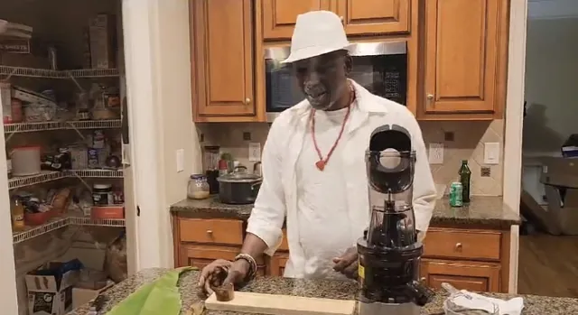
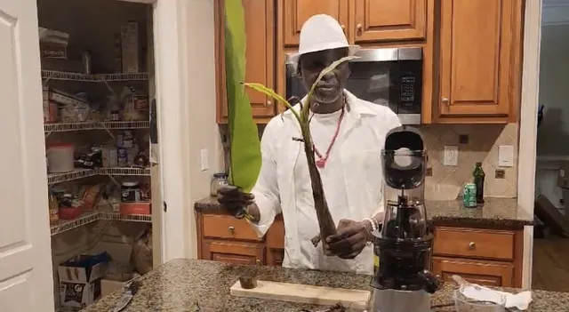

Our programs
Corn, livestock, poultry and plantain.
Program 1
Corn field


Program 2
Livestock farming
Animal husbandry


Goat section

Program 3
Poultry farming
Details of this program are coming from the farm.
Program 4
Plantain farming
Details of this program are coming from the farm.


Grow with us
Book a call with the Trust Fund, or write to us and tell us how you want to take part.